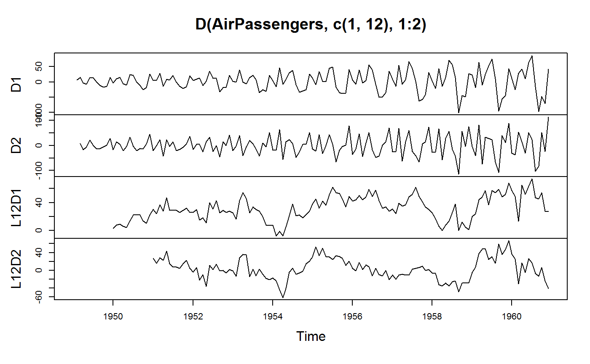
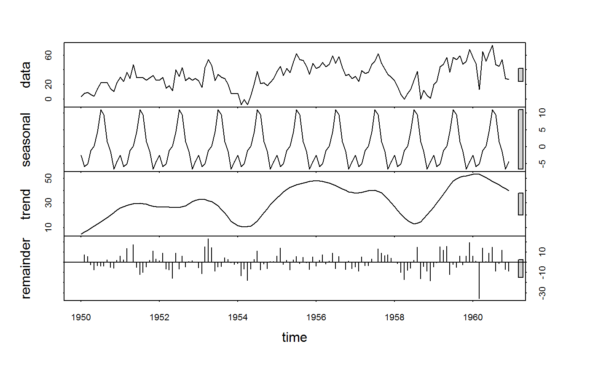
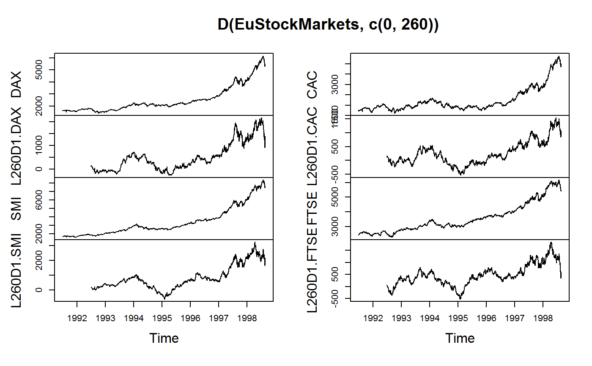

fdiff.Rdfdiff is a S3 generic to compute (sequences of) suitably lagged / leaded and iterated differences, quasi-differences or (quasi-)log-differences. The difference and log-difference operators D and Dlog also exists as parsimonious wrappers around fdiff, providing more flexibility than fdiff when applied to data frames.
fdiff(x, n = 1, diff = 1, ...)
D(x, n = 1, diff = 1, ...)
Dlog(x, n = 1, diff = 1, ...)
# S3 method for default
fdiff(x, n = 1, diff = 1, g = NULL, t = NULL, fill = NA, log = FALSE, rho = 1,
stubs = TRUE, ...)
# S3 method for default
D(x, n = 1, diff = 1, g = NULL, t = NULL, fill = NA, rho = 1,
stubs = TRUE, ...)
# S3 method for default
Dlog(x, n = 1, diff = 1, g = NULL, t = NULL, fill = NA, rho = 1, stubs = TRUE, ...)
# S3 method for matrix
fdiff(x, n = 1, diff = 1, g = NULL, t = NULL, fill = NA, log = FALSE, rho = 1,
stubs = length(n) + length(diff) > 2L, ...)
# S3 method for matrix
D(x, n = 1, diff = 1, g = NULL, t = NULL, fill = NA, rho = 1,
stubs = TRUE, ...)
# S3 method for matrix
Dlog(x, n = 1, diff = 1, g = NULL, t = NULL, fill = NA, rho = 1, stubs = TRUE, ...)
# S3 method for data.frame
fdiff(x, n = 1, diff = 1, g = NULL, t = NULL, fill = NA, log = FALSE, rho = 1,
stubs = length(n) + length(diff) > 2L, ...)
# S3 method for data.frame
D(x, n = 1, diff = 1, by = NULL, t = NULL, cols = is.numeric,
fill = NA, rho = 1, stubs = TRUE, keep.ids = TRUE, ...)
# S3 method for data.frame
Dlog(x, n = 1, diff = 1, by = NULL, t = NULL, cols = is.numeric,
fill = NA, rho = 1, stubs = TRUE, keep.ids = TRUE, ...)
# Methods for indexed data / compatibility with plm:
# S3 method for pseries
fdiff(x, n = 1, diff = 1, fill = NA, log = FALSE, rho = 1,
stubs = length(n) + length(diff) > 2L, shift = "time", ...)
# S3 method for pseries
D(x, n = 1, diff = 1, fill = NA, rho = 1, stubs = TRUE, shift = "time", ...)
# S3 method for pseries
Dlog(x, n = 1, diff = 1, fill = NA, rho = 1, stubs = TRUE, shift = "time", ...)
# S3 method for pdata.frame
fdiff(x, n = 1, diff = 1, fill = NA, log = FALSE, rho = 1,
stubs = length(n) + length(diff) > 2L, shift = "time", ...)
# S3 method for pdata.frame
D(x, n = 1, diff = 1, cols = is.numeric, fill = NA, rho = 1, stubs = TRUE,
shift = "time", keep.ids = TRUE, ...)
# S3 method for pdata.frame
Dlog(x, n = 1, diff = 1, cols = is.numeric, fill = NA, rho = 1, stubs = TRUE,
shift = "time", keep.ids = TRUE, ...)
# Methods for grouped data frame / compatibility with dplyr:
# S3 method for grouped_df
fdiff(x, n = 1, diff = 1, t = NULL, fill = NA, log = FALSE, rho = 1,
stubs = length(n) + length(diff) > 2L, keep.ids = TRUE, ...)
# S3 method for grouped_df
D(x, n = 1, diff = 1, t = NULL, fill = NA, rho = 1, stubs = TRUE,
keep.ids = TRUE, ...)
# S3 method for grouped_df
Dlog(x, n = 1, diff = 1, t = NULL, fill = NA, rho = 1, stubs = TRUE,
keep.ids = TRUE, ...)a numeric vector / time series, (time series) matrix, data frame, 'indexed_series' ('pseries'), 'indexed_frame' ('pdata.frame') or grouped data frame ('grouped_df').
integer. A vector indicating the number of lags or leads.
integer. A vector of integers > 1 indicating the order of differencing / log-differencing.
a factor, GRP object, or atomic vector / list of vectors (internally grouped with group) used to group x.
data.frame method: Same as g, but also allows one- or two-sided formulas i.e. ~ group1 or var1 + var2 ~ group1 + group2. See Examples.
a time vector or list of vectors. See flag.
data.frame method: Select columns to difference using a function, column names, indices or a logical vector. Default: All numeric variables. Note: cols is ignored if a two-sided formula is passed to by.
value to insert when vectors are shifted. Default is NA.
logical. TRUE computes log-differences. See Details.
double. Autocorrelation parameter. Set to a value between 0 and 1 for quasi-differencing. Any numeric value can be supplied.
logical. TRUE will rename all differenced columns by adding prefixes "LnDdiff." / "FnDdiff." for differences "LnDlogdiff." / "FnDlogdiff." for log-differences and replacing "D" / "Dlog" with "QD" / "QDlog" for quasi-differences.
pseries / pdata.frame methods: character. "time" or "row". See flag for details.
data.frame / pdata.frame / grouped_df methods: Logical. Drop all identifiers from the output (which includes all variables passed to by or t). Note: For 'grouped_df' / 'pdata.frame' identifiers are dropped, but the "groups" / "index" attributes are kept.
arguments to be passed to or from other methods.
By default, fdiff/D/Dlog return x with all columns differenced / log-differenced. Differences are computed as repeat(diff) x[i] - rho*x[i-n], and log-differences as log(x[i]) - rho*log(x[i-n]) for diff = 1 and repeat(diff-1) x[i] - rho*x[i-n] is used to compute subsequent differences (usually diff = 1 for log-differencing). If rho < 1, this becomes quasi- (or partial) differencing, which is a technique suggested by Cochrane and Orcutt (1949) to deal with serial correlation in regression models, where rho is typically estimated by running a regression of the model residuals on the lagged residuals.
It is also possible to compute forward differences by passing negative n values. n also supports arbitrary vectors of integers (lags), and diff supports positive sequences of integers (differences):
If more than one value is passed to n and/or diff, the data is expanded-wide as follows: If x is an atomic vector or time series, a (time series) matrix is returned with columns ordered first by lag, then by difference. If x is a matrix or data frame, each column is expanded in like manor such that the output has ncol(x)*length(n)*length(diff) columns ordered first by column name, then by lag, then by difference.
For further computational details and efficiency considerations see the help page of flag.
x differenced diff times using lags n of itself. Quasi and log-differences are toggled by the rho and log arguments or the Dlog operator. Computations can be grouped by g/by and/or ordered by t. See Details and Examples.
Cochrane, D.; Orcutt, G. H. (1949). Application of Least Squares Regression to Relationships Containing Auto-Correlated Error Terms. Journal of the American Statistical Association. 44 (245): 32-61.
Prais, S. J. & Winsten, C. B. (1954). Trend Estimators and Serial Correlation. Cowles Commission Discussion Paper No. 383. Chicago.
## Simple Time Series: AirPassengers
D(AirPassengers) # 1st difference, same as fdiff(AirPassengers)
#> Jan Feb Mar Apr May Jun Jul Aug Sep Oct Nov Dec
#> 1949 NA 6 14 -3 -8 14 13 0 -12 -17 -15 14
#> 1950 -3 11 15 -6 -10 24 21 0 -12 -25 -19 26
#> 1951 5 5 28 -15 9 6 21 0 -15 -22 -16 20
#> 1952 5 9 13 -12 2 35 12 12 -33 -18 -19 22
#> 1953 2 0 40 -1 -6 14 21 8 -35 -26 -31 21
#> [ reached getOption("max.print") -- omitted 7 rows ]
D(AirPassengers, -1) # Forward difference
#> Jan Feb Mar Apr May Jun Jul Aug Sep Oct Nov Dec
#> 1949 -6 -14 3 8 -14 -13 0 12 17 15 -14 3
#> 1950 -11 -15 6 10 -24 -21 0 12 25 19 -26 -5
#> 1951 -5 -28 15 -9 -6 -21 0 15 22 16 -20 -5
#> 1952 -9 -13 12 -2 -35 -12 -12 33 18 19 -22 -2
#> 1953 0 -40 1 6 -14 -21 -8 35 26 31 -21 -3
#> [ reached getOption("max.print") -- omitted 7 rows ]
Dlog(AirPassengers) # Log-difference
#> Jan Feb Mar Apr May
#> 1949 NA 0.052185753 0.112117298 -0.022989518 -0.064021859
#> 1950 -0.025752496 0.091349779 0.112477983 -0.043485112 -0.076961041
#> 1951 0.035091320 0.033901552 0.171148256 -0.088033349 0.053744276
#> 1952 0.029675768 0.051293294 0.069733338 -0.064193158 0.010989122
#> 1953 0.010256500 0.000000000 0.185717146 -0.004246291 -0.025863511
#> Jun Jul Aug Sep Oct
#> 1949 0.109484233 0.091937495 0.000000000 -0.084557388 -0.133531393
#> 1950 0.175632569 0.131852131 0.000000000 -0.073203404 -0.172245905
#> 1951 0.034289073 0.111521274 0.000000000 -0.078369067 -0.127339422
#> 1952 0.175008910 0.053584246 0.050858417 -0.146603474 -0.090060824
#> 1953 0.059339440 0.082887660 0.029852963 -0.137741925 -0.116202008
#> Nov Dec
#> 1949 -0.134732594 0.126293725
#> 1950 -0.154150680 0.205443974
#> 1951 -0.103989714 0.128381167
#> 1952 -0.104778951 0.120363682
#> 1953 -0.158901283 0.110348057
#> [ reached getOption("max.print") -- omitted 7 rows ]
D(AirPassengers, 1, 2) # Second difference
#> Jan Feb Mar Apr May Jun Jul Aug Sep Oct Nov Dec
#> 1949 NA NA 8 -17 -5 22 -1 -13 -12 -5 2 29
#> 1950 -17 14 4 -21 -4 34 -3 -21 -12 -13 6 45
#> 1951 -21 0 23 -43 24 -3 15 -21 -15 -7 6 36
#> 1952 -15 4 4 -25 14 33 -23 0 -45 15 -1 41
#> 1953 -20 -2 40 -41 -5 20 7 -13 -43 9 -5 52
#> [ reached getOption("max.print") -- omitted 7 rows ]
Dlog(AirPassengers, 1, 2) # Second log-difference
#> Jan Feb Mar Apr May
#> 1949 NA NA 0.0599315450 -0.1351068163 -0.0410323405
#> 1950 -0.1520462214 0.1171022747 0.0211282048 -0.1559630954 -0.0334759292
#> 1951 -0.1703526544 -0.0011897681 0.1372467045 -0.2591816057 0.1417776255
#> 1952 -0.0987053985 0.0216175262 0.0184400436 -0.1339264957 0.0751822792
#> 1953 -0.1101071821 -0.0102565002 0.1857171458 -0.1899634367 -0.0216172197
#> Jun Jul Aug Sep Oct
#> 1949 0.1735060916 -0.0175467375 -0.0919374953 -0.0845573880 -0.0489740046
#> 1950 0.2525936098 -0.0437804375 -0.1318521311 -0.0732034040 -0.0990425008
#> 1951 -0.0194552025 0.0772322010 -0.1115212744 -0.0783690671 -0.0489703553
#> 1952 0.1640197884 -0.1214246638 -0.0027258289 -0.1974618914 0.0565426503
#> 1953 0.0852029504 0.0235482200 -0.0530346967 -0.1675948883 0.0215399175
#> Nov Dec
#> 1949 -0.0012012013 0.2610263193
#> 1950 0.0180952250 0.3595946540
#> 1951 0.0233497089 0.2323708802
#> 1952 -0.0147181273 0.2251426335
#> 1953 -0.0426992749 0.2692493398
#> [ reached getOption("max.print") -- omitted 7 rows ]
D(AirPassengers, 12) # Seasonal difference (data is monthly)
#> Jan Feb Mar Apr May Jun Jul Aug Sep Oct Nov Dec
#> 1949 NA NA NA NA NA NA NA NA NA NA NA NA
#> 1950 3 8 9 6 4 14 22 22 22 14 10 22
#> 1951 30 24 37 28 47 29 29 29 26 29 32 26
#> 1952 26 30 15 18 11 40 31 43 25 29 26 28
#> 1953 25 16 43 54 46 25 34 30 28 20 8 7
#> [ reached getOption("max.print") -- omitted 7 rows ]
D(AirPassengers, # Quasi-difference, see a better example below
rho = pwcor(AirPassengers, L(AirPassengers)))
#> Jan Feb Mar Apr May Jun
#> 1949 NA 10.4581994 18.6970315 2.2543065 -2.8651096 18.8164476
#> 1950 1.6970315 15.5776155 20.0154743 -0.3874454 -4.6262775 28.9756690
#> 1951 10.5727493 10.7717760 33.9708028 -7.9146474 15.4882724 12.8465205
#> 1952 11.6076884 15.8067152 20.1649634 -4.3175671 9.2047687 42.2843794
#> 1953 9.7222383 7.8018490 47.8018490 8.3940631 3.3542577 23.1154256
#> Jul Aug Sep Oct Nov Dec
#> 1949 18.3737225 5.8911921 -6.1088079 -11.5864721 -10.2631631 18.1397566
#> 1950 26.9309974 6.7669098 -5.2330902 -18.7107544 -13.7058882 30.5378101
#> 1951 28.0853526 7.9212650 -7.0787350 -14.6758152 -9.5515330 25.8115814
#> 1952 20.6775667 21.1552309 -23.3671048 -9.6806814 -11.3971778 28.8465205
#> 1953 30.6727005 18.5086129 -24.1729443 -16.5661316 -22.6010707 28.1649634
#> [ reached getOption("max.print") -- omitted 7 rows ]
head(D(AirPassengers, -2:2, 1:3)) # Sequence of leaded/lagged and iterated differences
#> F2D1 F2D2 F2D3 FD1 FD2 FD3 -- D1 D2 D3 L2D1 L2D2 L2D3
#> [1,] -20 -31 -69 -6 8 25 112 NA NA NA NA NA NA
#> [2,] -11 -5 -12 -14 -17 -12 118 6 NA NA NA NA NA
#> [3,] 11 38 77 3 -5 -27 132 14 8 NA 20 NA NA
#> [4,] -6 7 49 8 22 23 129 -3 -17 -25 11 NA NA
#> [5,] -27 -39 -19 -14 -1 12 121 -8 -5 12 -11 -31 NA
#> [ reached getOption("max.print") -- omitted 1 row ]
# let's do some visual analysis
plot(AirPassengers) # Plot the series - seasonal pattern is evident
plot(stl(AirPassengers, "periodic")) # Seasonal decomposition
plot(D(AirPassengers,c(1,12),1:2)) # Plotting ordinary and seasonal first and second differences

plot(stl(window(D(AirPassengers,12), # Taking seasonal differences removes most seasonal variation
1950), "periodic"))

## Time Series Matrix of 4 EU Stock Market Indicators, recorded 260 days per year
plot(D(EuStockMarkets, c(0, 260))) # Plot series and annual differnces

mod <- lm(DAX ~., L(EuStockMarkets, c(0, 260))) # Regressing the DAX on its annual lag
summary(mod) # and the levels and annual lags others
#>
#> Call:
#> lm(formula = DAX ~ ., data = L(EuStockMarkets, c(0, 260)))
#>
#> Residuals:
#> Min 1Q Median 3Q Max
#> -224.33 -57.02 -12.40 51.51 359.96
#>
#> Coefficients:
#> Estimate Std. Error t value Pr(>|t|)
#> (Intercept) -123.26123 59.74149 -2.063 0.0393 *
#> L260.DAX -0.02126 0.02151 -0.988 0.3232
#> SMI 0.37415 0.01356 27.589 <2e-16 ***
#> L260.SMI 0.28186 0.01901 14.826 <2e-16 ***
#> CAC 0.52973 0.01544 34.305 <2e-16 ***
#> L260.CAC -0.23401 0.02145 -10.911 <2e-16 ***
#> FTSE -0.03944 0.01780 -2.215 0.0269 *
#> L260.FTSE 0.02888 0.02182 1.324 0.1858
#> ---
#> Signif. codes: 0 ‘***’ 0.001 ‘**’ 0.01 ‘*’ 0.05 ‘.’ 0.1 ‘ ’ 1
#>
#> Residual standard error: 84.02 on 1592 degrees of freedom
#> (260 observations deleted due to missingness)
#> Multiple R-squared: 0.9943, Adjusted R-squared: 0.9942
#> F-statistic: 3.94e+04 on 7 and 1592 DF, p-value: < 2.2e-16
#>
r <- residuals(mod) # Obtain residuals
pwcor(r, L(r)) # Residual Autocorrelation
#> [1] .97
fFtest(r, L(r)) # F-test of residual autocorrelation
#> R-Sq. DF1 DF2 F-Stat. P-value
#> 0.937 1 1597 23690.699 0.000
# (better use lmtest :: bgtest)
modCO <- lm(QD1.DAX ~., D(L(EuStockMarkets, c(0, 260)), # Cochrane-Orcutt (1949) estimation
rho = pwcor(r, L(r))))
summary(modCO)
#>
#> Call:
#> lm(formula = QD1.DAX ~ ., data = D(L(EuStockMarkets, c(0, 260)),
#> rho = pwcor(r, L(r))))
#>
#> Residuals:
#> Min 1Q Median 3Q Max
#> -87.131 -9.079 -0.439 9.228 119.993
#>
#> Coefficients:
#> Estimate Std. Error t value Pr(>|t|)
#> (Intercept) -17.979391 2.094867 -8.583 <2e-16 ***
#> QD1.L260.DAX 0.048116 0.034403 1.399 0.162
#> QD1.SMI 0.343808 0.013902 24.731 <2e-16 ***
#> QD1.L260.SMI 0.014331 0.022530 0.636 0.525
#> QD1.CAC 0.459655 0.024406 18.834 <2e-16 ***
#> QD1.L260.CAC -0.031068 0.030598 -1.015 0.310
#> QD1.FTSE 0.220516 0.020682 10.662 <2e-16 ***
#> QD1.L260.FTSE 0.007577 0.025948 0.292 0.770
#> ---
#> Signif. codes: 0 ‘***’ 0.001 ‘**’ 0.01 ‘*’ 0.05 ‘.’ 0.1 ‘ ’ 1
#>
#> Residual standard error: 19.06 on 1591 degrees of freedom
#> (261 observations deleted due to missingness)
#> Multiple R-squared: 0.8582, Adjusted R-squared: 0.8576
#> F-statistic: 1376 on 7 and 1591 DF, p-value: < 2.2e-16
#>
rCO <- residuals(modCO)
fFtest(rCO, L(rCO)) # No more autocorrelation
#> R-Sq. DF1 DF2 F-Stat. P-value
#> 0.001 1 1596 2.326 0.127
## World Development Panel Data
head(fdiff(num_vars(wlddev), 1, 1, # Computes differences of numeric variables
wlddev$country, wlddev$year)) # fdiff requires external inputs..
#> year decade PCGDP LIFEEX GINI ODA POP
#> 1 NA NA NA NA NA NA NA
#> 2 1 0 NA 0.516 NA 115310005 172437
#> 3 1 0 NA 0.509 NA -119240005 182031
#> 4 1 0 NA 0.500 NA 124880005 191764
#> 5 1 0 NA 0.492 NA 58200012 201576
#> 6 1 0 NA 0.485 NA 45919983 211539
head(D(wlddev, 1, 1, ~country, ~year)) # Differences of numeric variables
#> country year D1.decade D1.PCGDP D1.LIFEEX D1.GINI D1.ODA D1.POP
#> 1 Afghanistan 1960 NA NA NA NA NA NA
#> 2 Afghanistan 1961 0 NA 0.516 NA 115310005 172437
#> 3 Afghanistan 1962 0 NA 0.509 NA -119240005 182031
#> 4 Afghanistan 1963 0 NA 0.500 NA 124880005 191764
#> 5 Afghanistan 1964 0 NA 0.492 NA 58200012 201576
#> 6 Afghanistan 1965 0 NA 0.485 NA 45919983 211539
head(D(wlddev, 1, 1, ~country)) # Without t: Works because data is ordered
#> country D1.year D1.decade D1.PCGDP D1.LIFEEX D1.GINI D1.ODA D1.POP
#> 1 Afghanistan NA NA NA NA NA NA NA
#> 2 Afghanistan 1 0 NA 0.516 NA 115310005 172437
#> 3 Afghanistan 1 0 NA 0.509 NA -119240005 182031
#> 4 Afghanistan 1 0 NA 0.500 NA 124880005 191764
#> 5 Afghanistan 1 0 NA 0.492 NA 58200012 201576
#> 6 Afghanistan 1 0 NA 0.485 NA 45919983 211539
head(D(wlddev, 1, 1, PCGDP + LIFEEX ~ country, ~year)) # Difference of GDP & Life Expectancy
#> country year D1.PCGDP D1.LIFEEX
#> 1 Afghanistan 1960 NA NA
#> 2 Afghanistan 1961 NA 0.516
#> 3 Afghanistan 1962 NA 0.509
#> 4 Afghanistan 1963 NA 0.500
#> 5 Afghanistan 1964 NA 0.492
#> 6 Afghanistan 1965 NA 0.485
head(D(wlddev, 0:1, 1, ~ country, ~year, cols = 9:10)) # Same, also retaining original series
#> country year PCGDP D1.PCGDP LIFEEX D1.LIFEEX
#> 1 Afghanistan 1960 NA NA 32.446 NA
#> 2 Afghanistan 1961 NA NA 32.962 0.516
#> 3 Afghanistan 1962 NA NA 33.471 0.509
#> 4 Afghanistan 1963 NA NA 33.971 0.500
#> 5 Afghanistan 1964 NA NA 34.463 0.492
#> 6 Afghanistan 1965 NA NA 34.948 0.485
head(D(wlddev, 0:1, 1, ~ country, ~year, 9:10, # Dropping id columns
keep.ids = FALSE))
#> PCGDP D1.PCGDP LIFEEX D1.LIFEEX
#> 1 NA NA 32.446 NA
#> 2 NA NA 32.962 0.516
#> 3 NA NA 33.471 0.509
#> 4 NA NA 33.971 0.500
#> 5 NA NA 34.463 0.492
#> 6 NA NA 34.948 0.485
## Indexed computations:
wldi <- findex_by(wlddev, iso3c, year)
# Dynamic Panel Data Models:
summary(lm(D(PCGDP) ~ L(PCGDP) + D(LIFEEX), data = wldi)) # Simple case
#>
#> Call:
#> lm(formula = D(PCGDP) ~ L(PCGDP) + D(LIFEEX), data = wldi)
#>
#> Residuals:
#> Min 1Q Median 3Q Max
#> -16807.5 -107.5 -51.7 109.4 12574.6
#>
#> Indexed by: iso3c [5] | year [4 (61)]
#>
#> Coefficients:
#> Estimate Std. Error t value Pr(>|t|)
#> (Intercept) 9.179e+01 1.340e+01 6.852 7.76e-12 ***
#> L(PCGDP) 8.893e-03 5.577e-04 15.945 < 2e-16 ***
#> D(LIFEEX) -2.928e+01 2.393e+01 -1.224 0.221
#> ---
#> Signif. codes: 0 ‘***’ 0.001 ‘**’ 0.01 ‘*’ 0.05 ‘.’ 0.1 ‘ ’ 1
#>
#> Residual standard error: 828.2 on 8803 degrees of freedom
#> (4370 observations deleted due to missingness)
#> Multiple R-squared: 0.02932, Adjusted R-squared: 0.0291
#> F-statistic: 132.9 on 2 and 8803 DF, p-value: < 2.2e-16
#>
summary(lm(Dlog(PCGDP) ~ L(log(PCGDP)) + Dlog(LIFEEX), data = wldi)) # In log-differneces
#>
#> Call:
#> lm(formula = Dlog(PCGDP) ~ L(log(PCGDP)) + Dlog(LIFEEX), data = wldi)
#>
#> Residuals:
#> Min 1Q Median 3Q Max
#> -1.07097 -0.02055 0.00291 0.02570 0.85699
#>
#> Indexed by: iso3c [5] | year [5 (61)]
#>
#> Coefficients:
#> Estimate Std. Error t value Pr(>|t|)
#> (Intercept) 0.0095557 0.0037921 2.520 0.0118 *
#> L(log(PCGDP)) 0.0007847 0.0004352 1.803 0.0714 .
#> Dlog(LIFEEX) 0.5462310 0.0883588 6.182 6.61e-10 ***
#> ---
#> Signif. codes: 0 ‘***’ 0.001 ‘**’ 0.01 ‘*’ 0.05 ‘.’ 0.1 ‘ ’ 1
#>
#> Residual standard error: 0.059 on 8803 degrees of freedom
#> (4370 observations deleted due to missingness)
#> Multiple R-squared: 0.004326, Adjusted R-squared: 0.0041
#> F-statistic: 19.12 on 2 and 8803 DF, p-value: 5.158e-09
#>
# Adding a lagged difference...
summary(lm(D(PCGDP) ~ L(D(PCGDP, 0:1)) + L(D(LIFEEX), 0:1), data = wldi))
#>
#> Call:
#> lm(formula = D(PCGDP) ~ L(D(PCGDP, 0:1)) + L(D(LIFEEX), 0:1),
#> data = wldi)
#>
#> Residuals:
#> Min 1Q Median 3Q Max
#> -17019.6 -92.5 -41.8 93.5 12148.9
#>
#> Indexed by: iso3c [4] | year [5 (61)]
#>
#> Coefficients:
#> Estimate Std. Error t value Pr(>|t|)
#> (Intercept) 76.347493 13.265922 5.755 8.95e-09 ***
#> L(D(PCGDP, 0:1))L1.-- 0.004958 0.000550 9.014 < 2e-16 ***
#> L(D(PCGDP, 0:1))L1.D1 0.320853 0.010302 31.144 < 2e-16 ***
#> L(D(LIFEEX), 0:1)-- -46.694289 35.322935 -1.322 0.186
#> L(D(LIFEEX), 0:1)L1 19.980467 35.083154 0.570 0.569
#> ---
#> Signif. codes: 0 ‘***’ 0.001 ‘**’ 0.01 ‘*’ 0.05 ‘.’ 0.1 ‘ ’ 1
#>
#> Residual standard error: 789.4 on 8610 degrees of freedom
#> (4561 observations deleted due to missingness)
#> Multiple R-squared: 0.1266, Adjusted R-squared: 0.1262
#> F-statistic: 312 on 4 and 8610 DF, p-value: < 2.2e-16
#>
summary(lm(Dlog(PCGDP) ~ L(Dlog(PCGDP, 0:1)) + L(Dlog(LIFEEX), 0:1), data = wldi))
#>
#> Call:
#> lm(formula = Dlog(PCGDP) ~ L(Dlog(PCGDP, 0:1)) + L(Dlog(LIFEEX),
#> 0:1), data = wldi)
#>
#> Residuals:
#> Min 1Q Median 3Q Max
#> -1.18359 -0.01869 0.00317 0.02277 1.04980
#>
#> Indexed by: iso3c [5] | year [5 (61)]
#>
#> Coefficients:
#> Estimate Std. Error t value Pr(>|t|)
#> (Intercept) 1.085e-02 3.656e-03 2.969 0.002998 **
#> L(Dlog(PCGDP, 0:1))L1.-- 7.837e-05 4.190e-04 0.187 0.851614
#> L(Dlog(PCGDP, 0:1))L1.Dlog1 2.703e-01 1.017e-02 26.570 < 2e-16 ***
#> L(Dlog(LIFEEX), 0:1)-- -9.415e-02 1.626e-01 -0.579 0.562630
#> L(Dlog(LIFEEX), 0:1)L1 5.539e-01 1.616e-01 3.428 0.000611 ***
#> ---
#> Signif. codes: 0 ‘***’ 0.001 ‘**’ 0.01 ‘*’ 0.05 ‘.’ 0.1 ‘ ’ 1
#>
#> Residual standard error: 0.05602 on 8610 degrees of freedom
#> (4561 observations deleted due to missingness)
#> Multiple R-squared: 0.08161, Adjusted R-squared: 0.08118
#> F-statistic: 191.3 on 4 and 8610 DF, p-value: < 2.2e-16
#>
# Same thing:
summary(lm(D1.PCGDP ~., data = L(D(wldi,0:1,1,9:10),0:1,keep.ids = FALSE)[,-1]))
#>
#> Call:
#> lm(formula = D1.PCGDP ~ ., data = L(D(wldi, 0:1, 1, 9:10), 0:1,
#> keep.ids = FALSE)[, -1])
#>
#> Residuals:
#> Min 1Q Median 3Q Max
#> -7.557e-10 -1.030e-12 -2.900e-13 4.000e-13 2.464e-09
#>
#> Indexed by: iso3c [3] | year [5 (61)]
#>
#> Coefficients: (1 not defined because of singularities)
#> Estimate Std. Error t value Pr(>|t|)
#> (Intercept) -1.085e-09 4.212e-11 -2.577e+01 <2e-16 ***
#> L1.year 5.498e-13 2.163e-14 2.543e+01 <2e-16 ***
#> PCGDP 1.000e+00 3.884e-16 2.574e+15 <2e-16 ***
#> L1.PCGDP -1.000e+00 3.900e-16 -2.564e+15 <2e-16 ***
#> L1.D1.PCGDP 6.119e-17 3.904e-16 1.570e-01 0.875
#> LIFEEX 1.636e-13 1.276e-12 1.280e-01 0.898
#> L1.LIFEEX -1.994e-13 1.273e-12 -1.570e-01 0.875
#> D1.LIFEEX NA NA NA NA
#> L1.D1.LIFEEX 3.875e-13 1.259e-12 3.080e-01 0.758
#> ---
#> Signif. codes: 0 ‘***’ 0.001 ‘**’ 0.01 ‘*’ 0.05 ‘.’ 0.1 ‘ ’ 1
#>
#> Residual standard error: 2.832e-11 on 8607 degrees of freedom
#> (4561 observations deleted due to missingness)
#> Multiple R-squared: 1, Adjusted R-squared: 1
#> F-statistic: 1.095e+30 on 7 and 8607 DF, p-value: < 2.2e-16
#>
## Grouped data
library(magrittr)
wlddev %>% fgroup_by(country) %>%
fselect(PCGDP,LIFEEX) %>% fdiff(0:1,1:2) # Adding a first and second difference
#> PCGDP D1.PCGDP D2.PCGDP LIFEEX D1.LIFEEX D2.LIFEEX
#> 1 NA NA NA 32.446 NA NA
#> 2 NA NA NA 32.962 0.516 NA
#> 3 NA NA NA 33.471 0.509 -0.007
#> 4 NA NA NA 33.971 0.500 -0.009
#> 5 NA NA NA 34.463 0.492 -0.008
#> 6 NA NA NA 34.948 0.485 -0.007
#> 7 NA NA NA 35.430 0.482 -0.003
#> 8 NA NA NA 35.914 0.484 0.002
#> 9 NA NA NA 36.403 0.489 0.005
#> 10 NA NA NA 36.900 0.497 0.008
#> 11 NA NA NA 37.409 0.509 0.012
#> [ reached 'max' / getOption("max.print") -- omitted 13165 rows ]
#>
#> Grouped by: country [216 | 61 (0)]
wlddev %>% fgroup_by(country) %>%
fselect(year,PCGDP,LIFEEX) %>% D(0:1,1:2,year) # Also using t (safer)
#> year PCGDP D1.PCGDP D2.PCGDP LIFEEX D1.LIFEEX D2.LIFEEX
#> 1 1960 NA NA NA 32.446 NA NA
#> 2 1961 NA NA NA 32.962 0.516 NA
#> 3 1962 NA NA NA 33.471 0.509 -0.007
#> 4 1963 NA NA NA 33.971 0.500 -0.009
#> 5 1964 NA NA NA 34.463 0.492 -0.008
#> 6 1965 NA NA NA 34.948 0.485 -0.007
#> 7 1966 NA NA NA 35.430 0.482 -0.003
#> 8 1967 NA NA NA 35.914 0.484 0.002
#> 9 1968 NA NA NA 36.403 0.489 0.005
#> 10 1969 NA NA NA 36.900 0.497 0.008
#> [ reached 'max' / getOption("max.print") -- omitted 13166 rows ]
#>
#> Grouped by: country [216 | 61 (0)]
wlddev %>% fgroup_by(country) %>% # Dropping id's
fselect(year,PCGDP,LIFEEX) %>% D(0:1,1:2,year, keep.ids = FALSE)
#> PCGDP D1.PCGDP D2.PCGDP LIFEEX D1.LIFEEX D2.LIFEEX
#> 1 NA NA NA 32.446 NA NA
#> 2 NA NA NA 32.962 0.516 NA
#> 3 NA NA NA 33.471 0.509 -0.007
#> 4 NA NA NA 33.971 0.500 -0.009
#> 5 NA NA NA 34.463 0.492 -0.008
#> 6 NA NA NA 34.948 0.485 -0.007
#> 7 NA NA NA 35.430 0.482 -0.003
#> 8 NA NA NA 35.914 0.484 0.002
#> 9 NA NA NA 36.403 0.489 0.005
#> 10 NA NA NA 36.900 0.497 0.008
#> 11 NA NA NA 37.409 0.509 0.012
#> [ reached 'max' / getOption("max.print") -- omitted 13165 rows ]
#>
#> Grouped by: country [216 | 61 (0)]